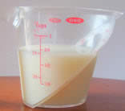
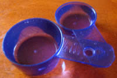

Measuring Cups
1 Cup
"1 Cup" is equal to 8 fluid ounces in US Standard Volume. It is a measure used in cooking.
A Metric Cup is slightly different: it is 250 milliliters (which is about 8.5 fluid ounces).
| Ounces (at 8 oz per cup) |
Tablespoons (at 16 Tbs per cup) |
milliliters (at 250 ml per cup) |
|
|---|---|---|---|
| ¼ cup | 2 oz | 4 Tbs | 63 ml |
| 1/3 cup | About 2¾ oz | About 5 Tbs | 83 ml |
| ½ cup | 4 oz | 8 Tbs | 125 ml |
| 2/3 cup | About 5¼ oz | About 11 Tbs | 167 ml |
| ¾ cup | 6 oz | 12 Tbs | 188 ml |
| 1 cup | 8 oz | 16 Tbs | 250 ml |
| 1 ¼ cup | 10 oz | 20 Tbs | 313 ml |
| 1 ½ cup | 12 oz | 24 Tbs | 375 ml |
| 1 ¾ cup | 14 oz | 28 Tbs | 438 ml |
| 2 cups | 16 oz | 32 Tbs | 500 ml |
| 4 cups | 32 oz | 64 Tbs | 1000 ml (1 liter) |
| 8 cups | 64 oz | 128 Tbs | 2000 ml (2 liters) |
(In italics: not exact)
Measuring Cups

Measuring cups are used to measure liquids, or powders like flour or sugar.
As we fill up the measuring cup, we need to look at which number it is filled to.

Here we have 2/3 cup (two-thirds of a cup) of milk.

And they can also measure milliliters (ml):
Here we have 150 ml.
It doesn't say "150" ... it says "50" ... but it is half-way between 100 and 200 so we can figure out it is 150 ml.

There are also special ones designed to hold an exact amount, such as these 1/2 cup and 1/4 cup measures.

They can also hold more than "1 Cup" of liquid.
This measuring cup holds up to 4 cups of liquid. If the liquid goes all the way to the 3, then there are 3 cups of liquid. Between the numbers we find fractions of a cup.
2 cups of a liquid is the same thing as 1 pint. So this measuring cup also holds 2 pints (4 cups equals 2 pints).